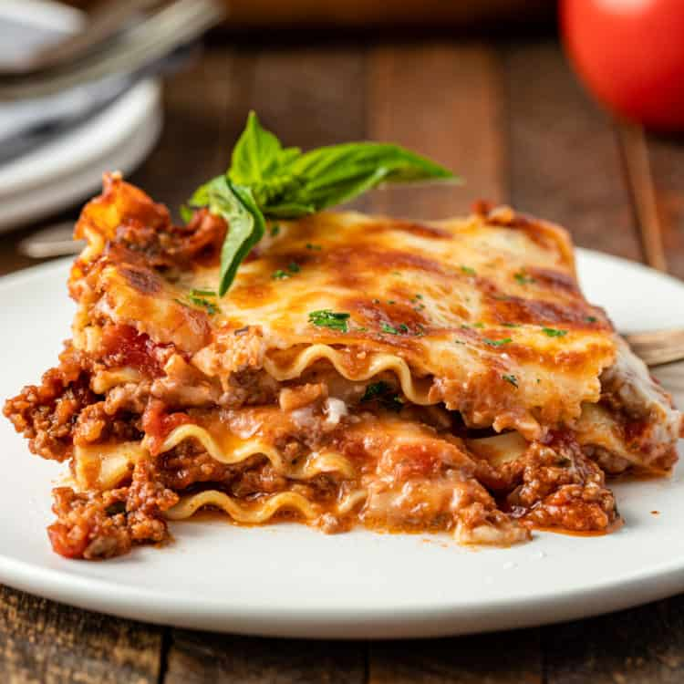

Lasagna With Bechamel

This particular lasagna recipe is quite important to me since I received
this food as a gift once. I've eaten it multiple times, but this gift
really was the best rendition of it. It takes much effort and ingredients
to create this comfort concoction.
You must create a multilayered pasta lathered in bechamel sauce that seeps
into all of the nooks and crannies of the pasta. Each layer consists of
either beef and/or pasta. Altogether, it becomes one of the greatest gifts
I have ever received.
Ingredients
- Lasagna noodles
- Crushed tomatoes
- Tomato paste
- Fresh basil
- Beef
- Lasagna sauces
- Meatless spaghetti sauce
- Bechamel for lasagna
- Beef bolognese sauce
Steps
- Start by prepping all of your ingredients and making the three
sauces needed for the lasagna.
- Then, place the dry noodles in a baking dish and cover with
hot water to soften them. Drain well afterwards.
- Spread a thin layer of bolognese on the bottom. Make a single
layer of noodles, then add more meat sauce.
- Next, spread some of the bechamel over the top.
- hen, add a couple handfuls of mozzarella and parmesan, making
sure to sprinkle it to the edges.
- Add another layer of noodles on top of the cheese.
- Continue layering until you have used up all of the ingredients.
This should be a 3 or 4 layer lasagna with bechamel, ending with a
layer of shredded cheese on top.
- Bake until warmed all the way through. The cheese should be
browned and bubbly, but if it starts to burn you can put some foil
on top.
- Let the lasagna rest so it can firm up before slicing.